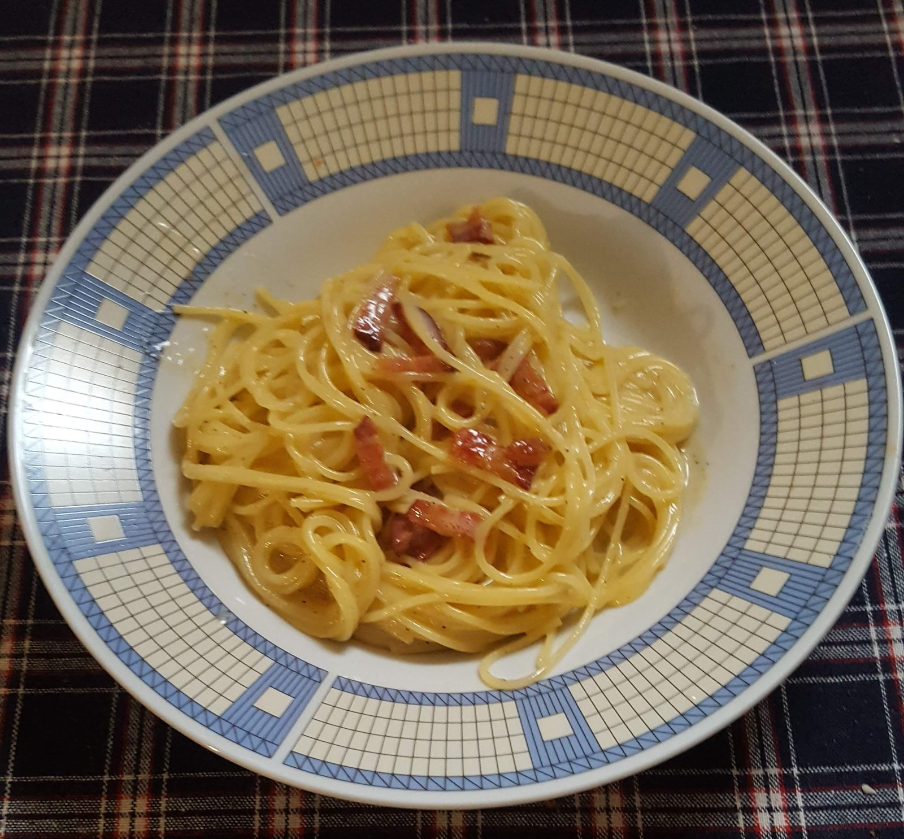

Spaghetti alla carbonara
Classico romano. Pasta gialla avvolta in un legame cremoso di uovo, formaggio pecorino e grasso di guanciale. Senza panna — la cremosità viene dal tuorlo, dal formaggio e dall'acqua di cottura.
Ingredienti principali
- spaghetti (o rigatoni)
- guanciale (tradizionalmente, non pancetta e assolutamente non prosciutto)
- uova (tuorli + uno intero)
- pecorino romano
- pepe nero
Nota regionale: la versione tradizionale romana non usa cipolla né aglio. Nelle varianti del nord a volte si trova pancetta, ma a Roma è considerato uno scambio.
📖 GialloZafferano · verifica ricetta